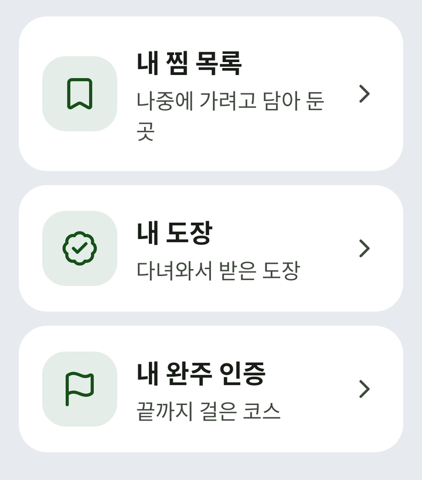

내 주변
가까운 가볼 곳과 축제를 찾아요.
- 가볼 곳 · 축제 · 쉼터 · 병원을 지도와 목록으로 봐요.
- 마음에 드는 곳은 「찜하기」로 담아 둬요.
- 그곳에 도착하면 「도장 찍기」를 눌러요.
- 「친구·가족에게 보내기」로 그곳을 알려요.
- 그곳에 열린 모임이 있으면 바로 볼 수 있어요.
시니어이음 앱
가까운 가볼 곳과 축제를 찾고, 그곳에 모임을 열어 함께 가는 앱이에요. 걷기 운동을 챙기고, 위급할 때는 소중한 분에게 알려요.

가까운 가볼 곳과 축제를 찾아요.
그곳에 모임을 열고 함께 가요.

담아 둔 곳과 다녀온 곳을 모아 봐요.

산책을 재고 걸을 길을 골라요.

위급할 때 소중한 분에게 알려요.

초대하거나 받은 코드를 넣어 친구를 맺어요.
주고받은 대화를 한곳에서 봐요.
글을 쓰고 이웃의 글을 읽어요.
공공 일자리 공고를 봐요.
출석, 두뇌 퀴즈, 걷기 운동으로 포인트를 모으고, 내 위치 꾸미기와 말풍선 고르기에 써요.
어르신 혜택을 주제와 지역으로 찾아요.
정부 정책 소식을 봐요.
글자가 작게 보이면내 정보에서 글자 크기를 키울 수 있어요.